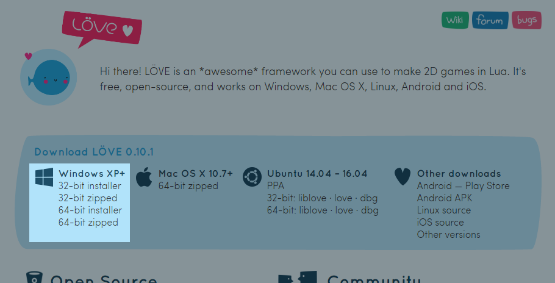
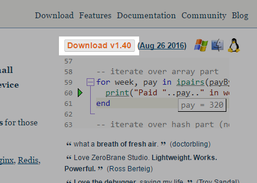
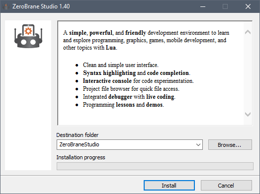
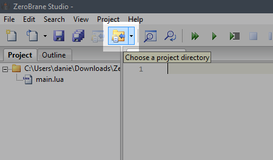

Chapter 2 and 3 can be done without any installation. You can use repl.it as an alternative if you don't feel like installing software right away. But be sure to read the A few more things paragraph at the bottom.
Go to love2d.org.
You should download either the 32-bit or the 64-bit installer. This depends on your system type. If you don't know your system type, just go with 32-bit.

Open the installer. Click on Next. Click on I agree. Now you can decide where you install LÖVE. It doesn't matter where you install LÖVE, but remember the folder. This folder will be referred to as the Installation Folder.
My installation folder will be C:/Program Files/LOVE.
Click on Next. Click on Install.
When LÖVE is done installing, click on Finish.
Now we need to install a text-editor. We're going to use ZeroBrane Studio in this tutorial.
Go to studio.zerobrane.com, and click on "Download".

Here you get the option to donate to ZeroBrane Studio. If you don't want to donate click on "Take me to the download page this time",
Open the installer, and install ZeroBrane Studio in your preferred folder.

When ZeroBrane Studio is done installing, open it.
Now we need to make a Project Folder. Open you file explorer and create a folder wherever you like, and name it whatever you want. In ZeroBrane Studio, click on the "Select Project Folder" icon, and select the folder you just created.

In ZeroBrane Studio, create a new file. File -> New, or use the shortcut Ctrl + N.
Inside this file, write the following code:
function love.draw()
love.graphics.print("Hello World!", 100, 100)
endGo to File -> Save, or use the shortcut Ctrl + S. Save the file as main.lua.
Go to Project -> Lua Interpreter and select LÖVE.
Now when you press the F6, a window should open with the text "Hello World!". Congratulations, you're ready to start learning LÖVE. Whenever I tell you to run the game or run the code I'm telling you to press F6 to execute LÖVE.
In case nothing happens and the following text shows up: Can't find love2d executable in any of the following folders, you installed LÖVE somewhere where ZeroBrane Studio can't find it. Go to Edit -> Preferrences -> Settings: User. Put in the following:
path.love2d = 'C:/path/to/love.exe'And replace 'C:/path/to/love.exe' with the path to where you installed LÖVE. Make sure to use frontslashes (/).
Did you copy/paste the above code? I encourage you to type the code I show you yourself. That might seem like a lot of extra work, but by doing so it will help you memorize everything a lot better.
The one thing you don't need to type yourself are comments.
--This line is a comment. This is not code.
--The next line is code:
print(123)
--Output: 123Every line starting with 2 minus-signs (--) is a comment. The computer ignores it, meaning we can type anything we want without getting an error. I can use comments to explain certain code better. When typing over the code you don't have to copy the comments.
With print we can send information to our Output console. This is the box at the bottom of our editor. When you close the game, it should say the text "123". I add the text --Output: to show you the expected output.
And with that, let's begin to learn how to program games!